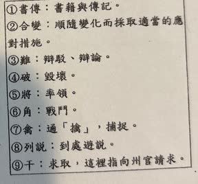
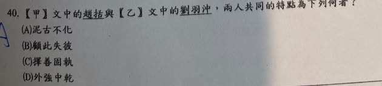

分享原卷｜第40題
完整原題
作答所需文章／材料
【甲】 趙王因以括為將，代廉頗。藺相如曰：「王以名使括，若膠柱而鼓瑟耳。括徒能讀其父書傳①，不知合變②也。」趙王不聽，遂將之。趙括自少時學兵法，言兵事，以天下莫能當。嘗與其父奢言兵事，奢不能難③，然不謂善，括母問奢其故，奢曰：「兵，死地也，而括易言之。使趙不將括即已；若必將之，破④趙軍者必括也。」 ——司馬遷《史記・廉頗藺相如列傳》 【乙】 劉羽沖，佚其名，滄州人……。偶得古兵書，伏讀經年，自謂可將⑤兵十萬。會有土寇，自練鄉兵與之角⑥，全隊潰覆，幾為所禽⑦。又得古水利書，伏讀經年，自謂可使千里成沃壤。繪圖列說⑧干⑨州官。州官亦好事，使試於一村。溝洫甫成，水大至，順渠灌入，人幾為魚。由是抑鬱不得，恆獨步庭階，搖首自語曰：「古人豈欺我哉？」如是日千百遍，惟此六字。不久，發病死。 ——紀昀《閱微草堂筆記》 【原卷註釋】 ①書傳：書籍與傳記。 ②合變：順隨變化而採取適當的應對措施。 ③難：辯駁、辯論。 ④破：毀壞。 ⑤將：率領。 ⑥角：戰鬥。 ⑦禽：通「擒」，捕捉。 ⑧列說：到處遊說。 ⑨干：求取，這裡指向州官請求。先想一想，再查看答案、解說與原圖
逐項解析
| 選項與原句 | 判讀 | 句意與判斷理由 |
|---|---|---|
| (A) 泥古不化 | 應選 | 兩人都守書本舊說，不知依現實條件應變。 |
| (B) 顧此失彼 | 不選 | 不是要兼顧多項工作而有所遺漏。 |
| (C) 擇善固執 | 不選 | 用來肯定堅持善道，與文章批評相反。 |
| (D) 外強中乾 | 不選 | 比喻表面強大、內在空虛，較籠統，未直接指出兩文的拘泥古書。 |
詳細說明與解題步驟
【甲文完整白話】
趙王於是讓趙括當將領，取代廉頗。藺相如說：「大王只憑名聲任用趙括，好比把瑟上調音的弦柱黏死再演奏。趙括只是會讀父親留下的兵書，不懂得隨情勢變化作適當應對。」趙王不聽，仍任命趙括為將。
趙括從小學兵法，談軍事時自認天下無人能比得上。他曾與父親趙奢討論軍事，父親雖難不倒他，卻不稱讚他。趙括的母親問原因，趙奢說：「戰爭是攸關生死的事，趙括卻把它說得很輕易。趙國不讓他當將領也就罷了；若一定用他，毀掉趙軍的必定是趙括。」
【乙文完整白話】
劉羽沖，本名已失傳，是滄州人。他偶得一本古兵書，埋頭讀了一整年，就自認能率十萬大軍。恰逢地方出現盜匪，他自己訓練鄉兵前去交戰，結果全隊潰敗，自己也差點被擒。
他又得到一本古水利書，埋頭讀了一整年，就自認能把大片土地變成肥沃田地。他畫圖、到處遊說，向州官請求推行。州官也好攬事，讓他先在一村試作。溝渠剛挖好，大水就來了，沿著溝渠灌入，村民差點淹死。
他因此鬱悶不得志，常獨自在庭階踱步，搖頭自語：「古人難道會騙我嗎？」每天重複千百次，總是這六個字。不久，就發病去世。
【共同的字詞線索】
膠柱鼓瑟比喻固執不變通，不是說兵書毫無價值；徒能讀的徒是只是，合變是隨變化應對。難在奢不能難是辯駁，不是艱難的形容詞。
自謂可將兵十萬只是自認有能力，不表示他實際帶了十萬兵。幾是幾乎、差一點；人幾為魚是差點淹死的形象說法，不是人真的變魚。佚其名是本名失傳，不是人物忘記自己的名字。
【共同點要同時扣住兩篇】
趙括徒能讀其父書傳、不知合變，能談兵書卻缺乏實際應變與審慎。
劉羽沖讀古兵書、古水利書後，就自以為足以統兵治水；失敗後仍只問古人豈欺我哉，沒有反省如何把書本知識用於當下條件。
兩者共同是只守舊說，不知靈活運用，故選A泥古不化。泥在此是拘泥，不是泥土。
B顧此失彼指不能兼顧，本文不是同時照顧兩件事的問題；C擇善固執是堅持正確原則的褒義，不適合這裡的批評；D外強中乾雖可泛指表面強而內在不足，但沒有A明確指出兩文共有的死守古書問題。
結論不是讀古書一定有害，而是應了解原理、檢驗條件，不能把熟讀與實際能力直接畫上等號。
核對註記：已依原卷或完整文字核對並獨立解題；對應教材課次未確認，歸綜合。
原圖（僅本題）


